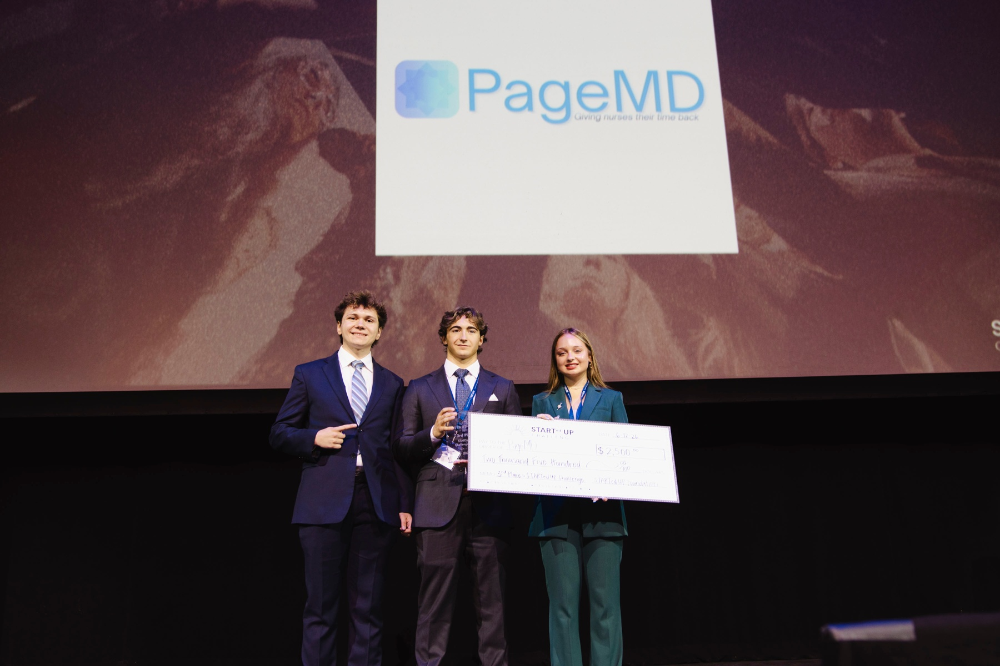

Why we built PageMD
Every outpatient clinic runs on the phone. Pharmacies calling to verify a refill, referring providers trying to reach a doctor, patients returning a call. All of it lands on a front desk that can only pick up one line at a time. The rest go to hold, to voicemail, or to a nurse who spends the afternoon relaying messages instead of caring for patients.
"The bottleneck was never the medicine. It was the phone."

We started PageMD to fix exactly that. Our AI answers every inbound call on the first ring, has a natural conversation, captures a complete message, and pages the right provider in about sixty seconds, without triaging, judging urgency, or making a single clinical decision. That judgment stays where it belongs: with your team.
We're a small founding team that moves fast, ships in the real world, and sits with the clinics we build for. PageMD is in pilot today, and we're just getting started.